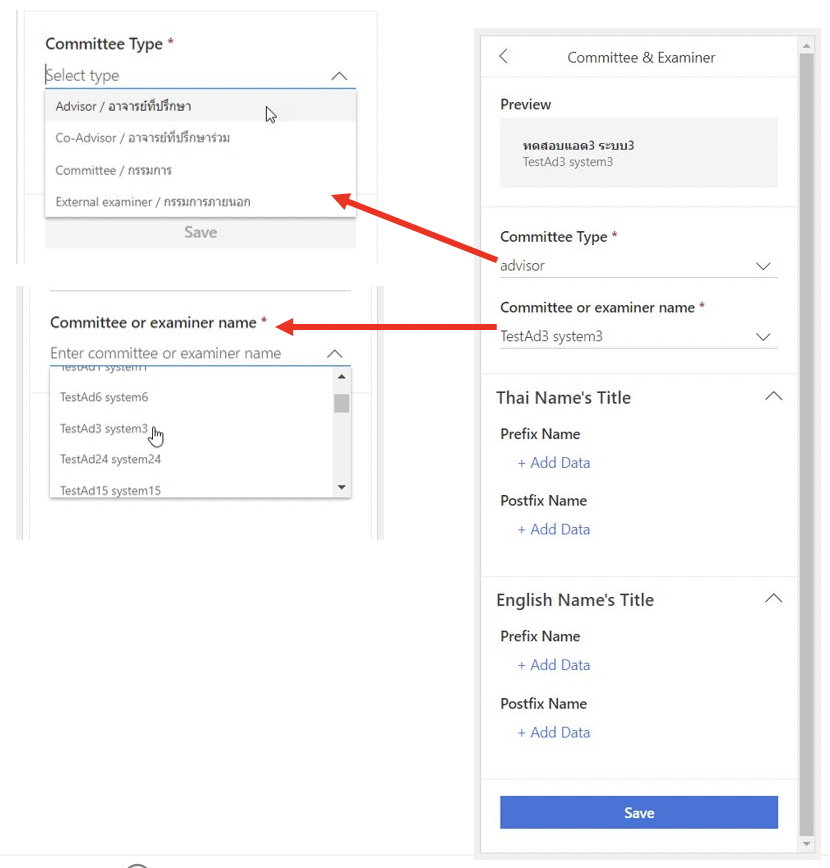
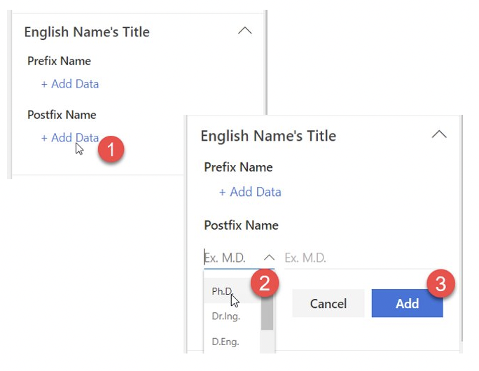

การเพิ่มชื่อคณะกรรมการสอบวิทยานิพนธ์ผ่าน iThesis Web Add-in¶
ขั้นตอนการเพิ่มชื่อคณะกรรมการสอบ¶
กด add committee
เลือกประเภทของกรรมการ
เลือกชื่อของคณะกรรมการ (สามารถเลือกได้เฉพาะชื่อที่มีในระบบเท่านั้น)
เพิ่มตำแหน่งและวุฒิกรรมการสอบ
กด save เพื่อบันทึกรายชื่อกรรมการ

การเพิ่มตำแหน่งและวุฒิกรรมการสอบ¶
กด add data ตำแหน่งที่ต้องการ
เลือกตำแหน่งหรือวุฒิการศึกษา
กด add
